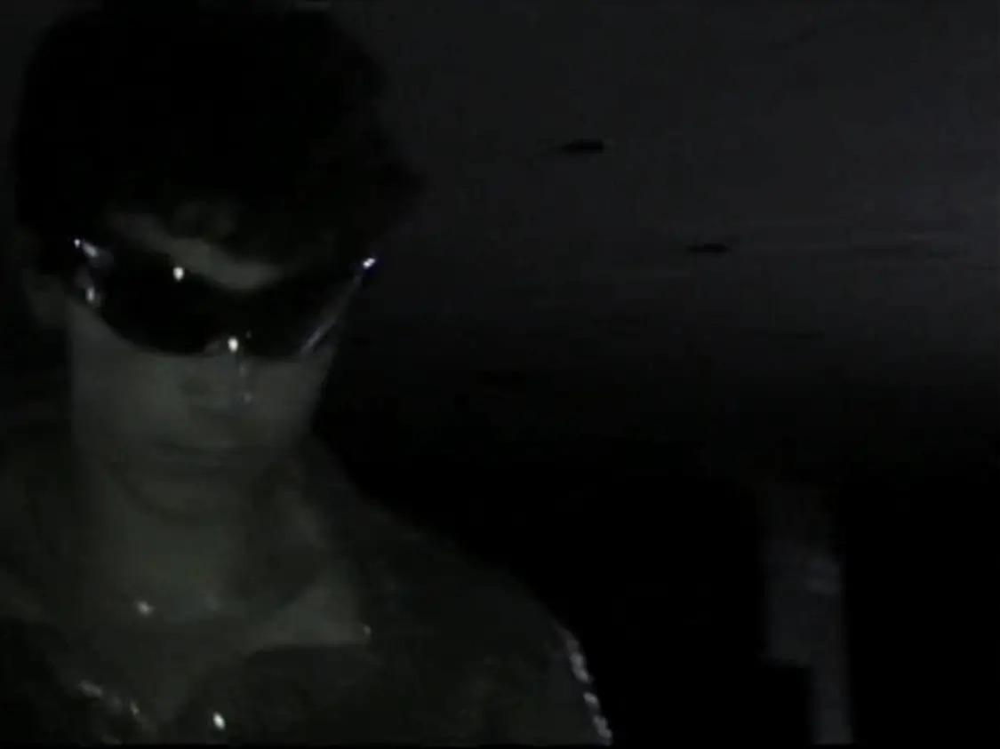

← Back to Home | ← Back to Videos
FAME FASHION SHOW REEL
- Recap Reel for SIT FAME, 2023.
- Stevens Inst of Technology's chapter of the Fashion Association for Marketing and Entrepreneurship.
- Runtime – 1:43.
- Shot on Panasonic SDR-S26 and Sony Handycam DCR-HC30.
- Edited with Final Cut Pro for Mac and Adobe After Effects.
- Shot in Hoboken, NJ.
Details
